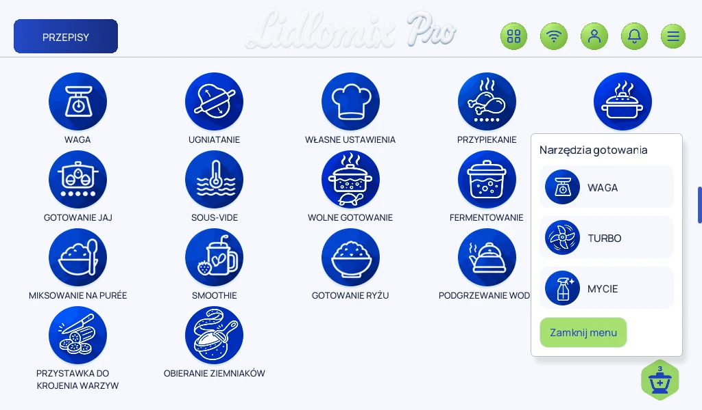

03 / Testy na sprzęcie ·
Od pliku do gotowania
W przepisie na adwentową kostkę drugi krok to odważenie migdałów. Chciałem, żeby na jednym ekranie było widać, ile trzeba dodać i ile już jest w misie.
Karty przepisów

Z karty mogę przejść do prowadzenia przez przepis. W tym przykładzie drugi krok to ważenie migdałów.
Ważenie w trakcie przepisu

W kroku ważenia Lidlomix Pro pokazuje bieżący odczyt z czujnika Connecta obok ilości z przepisu. Na moim egzemplarzu wskazanie zmienia się co 5 g. TARA zeruje wskazanie przed dodaniem kolejnego składnika. W testach na urządzeniu sprawdziłem także obroty, temperaturę, odliczanie i pracę w interwałach. Zgodne kroki przepisu mogą teraz sterować robotem.
Pływający przycisk

Pod ręką mam trzy skróty: Waga, Turbo i Mycie.
Dlaczego przepis dostał własny format
Z pliku Word mogłem przeczytać instrukcję, ale nadal sam przepisywałem czas, prędkość i kierunek obrotów. W pliku JSON te dane są zapisane przy każdym kroku. Po imporcie i wybraniu „Dostosuj przepis” aplikacja potrafi pokazać na przykład etap ugniatania z dobranym czasem.
Próbowałem też otwierać ChatGPT w przeglądarce Connecta. Przeglądarka na tym sprzęcie działała jednak wolno, więc przeniosłem przygotowanie przepisu na telefon. W asystencie zapisuję plik, a aplikacja mobilna przesyła go do robota przez lokalne Wi-Fi. To tę drogę sprawdzam teraz w codziennym użyciu.
Komentarze
Wczytuję komentarze…